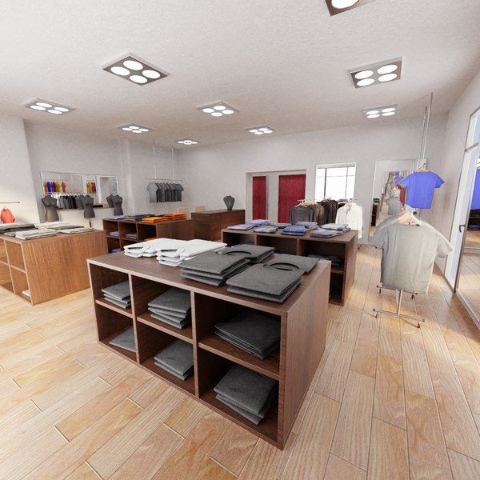

Jhonathan Fernandes
Estudante de Tecnologia
Analise e Desenvolvimento de Sistemas
Dev em
Formação | Back end
Estudante de Tecnologia
Analise e Desenvolvimento de Sistemas
Dev em
Formação | Back end
Olá! Sou Jhonathan Fernandes, tenho 36 anos e estou em transição de carreira após uma trajetória sólida na área de Gastronomia. Atuei por mais de 6 anos com gestão e operação no setor de alimentação. Recentemente, descobri algo que tem tudo a ver com meu propósito de vida: a tecnologia. Isso despertou em mim um novo olhar profissional e pessoal. Encontrei aquilo que quero para minha vida, algo que me faz querer aprender de forma leve e constante. Acordo pensando nisso todos os dias, com a certeza de que é o caminho que desejo seguir pelo resto da vida. Essa decisão me motivou a estudar e buscar uma nova carreira com foco, disciplina e paixão. Ao longo da minha jornada, desenvolvi uma alta capacidade de adaptação, lidando com diferentes contextos e cenários sob pressão, sempre com foco em resultados. Tenho experiência consolidada em liderança e gestão de pessoas, com forte atuação na colaboração em equipes multidisciplinares, promovendo um ambiente produtivo, alinhado e orientado a metas. Invisto constantemente no aprimoramento de habilidades técnicas e comportamentais, como pensamento crítico, comunicação, empatia, resiliência, atenção aos detalhes e resolução de problemas, por meio de formações estratégicas e vivências práticas. Estou motivado a explorar o setor de tecnologia, trazendo comigo um olhar atento para processos, soluções criativas e o compromisso com a melhoria contínua. Acredito que minha bagagem pode agregar muito ao ambiente tech, especialmente na resolução de desafios, no trabalho em equipe e na geração de valor para os projetos.
Desenvolvi um site responsivo para uma loja de carros fictícia, com foco em desempenho, organização e experiência do usuário. Todo o layout foi construído utilizando apenas HTML5, CSS3 e JavaScript puro, sem uso de frameworks como Bootstrap, garantindo total controle visual e leveza no carregamento. Implementei uma navegação fluida com rolagem suave e seções bem definidas, como catálogo de veículos, formulário de contato e área institucional. O CSS foi estruturado com flexbox e media queries, garantindo uma exibição adaptada para computadores, tablets e celulares. O projeto simula funcionalidades reais, como filtros por marca, modelo e preço, e foi organizado com boas práticas de semântica e acessibilidade.

Partindo do zero, fui responsável por desenvolver toda a parte tecnológica de uma loja de roupas fictícia. Minha missão era clara: criar uma experiência digital moderna, funcional e com identidade visual própria — sem utilizar frameworks prontos como Bootstrap, apenas HTML5, CSS3 e JavaScript puro. Cada detalhe do layout foi planejado por mim: desde a vitrine dos produtos até a navegação fluida entre as seções. Utilizei técnicas de responsividade com media queries e Flexbox/Grid, garantindo que o site funcionasse bem em qualquer dispositivo — do celular ao desktop. Implementei recursos de interação com JavaScript, como menus dinâmicos, botões com efeito e uma simulação de filtro de produtos. Tudo isso com foco na performance, acessibilidade e estilo. Esse projeto foi mais do que um exercício de código. Foi a construção de uma experiência completa de e-commerce — onde tecnologia e moda se encontram em harmonia.
Criei toda a estrutura tecnológica de uma loja virtual moderna, que rompe com o modelo antigo e mergulha de vez na era digital. Sem usar frameworks prontos como Bootstrap, desenvolvi toda a interface com HTML5, CSS3 e JavaScript puro, colocando a identidade da marca em cada linha de código. Saí do padrão engessado e criei algo único: um site responsivo, leve e intuitivo, pensado para funcionar bem em qualquer tela. Implementei interações dinâmicas com JavaScript, simulando funcionalidades de um e-commerce real: vitrine interativa, filtros inteligentes, carrinho funcional e um fluxo de navegação suave, que guia o cliente sem distrações. Mais do que desenvolver um site, entreguei uma experiência digital completa, onde cada clique representa um passo longe do passado e mais perto do futuro. Uma loja virtual com alma, feita na mão, com tecnologia limpa, moderna e com a minha assinatura.